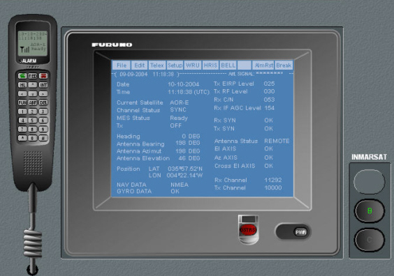

Inmarsat A-B-M
El puesto de alumno puede configurarse en cualquier momento como terminal de comunicaciones norma A, B o M y en todos los casos el alumno puede utilizar prácticamente las mismas funciones que las que proporcionan la mayoría de los equipos reales.
Es posible, por tanto, simular con total realismo los procedimientos de solicitud de mensajes, conexión telefónica y tratamiento de textos antes y después de su transmisión. Asimismo, el alumno puede controlar el estado de su terminal (calidad de recepción de señal TDM, apuntamiento normal y automático de la antena, distintivo de llamada, estado de enganche a la red y otros).
Cada puesto del simulador va equipado con un terminal Inmarsat simulado por software mimético del equipo Furuno FELCOM-82A y con un terminal telefónico con conexión USB.

El puesto del instructor actúa, simultáneamente, como lo hacen las estaciones costeras y de control de la red y dispone, por tanto, de las funciones que comúnmente se necesitan para poder actuar como tales estaciones. Puede supervisar el tráfico, enviar y recibir mensajes télex o telefónicos y obtener registros de actividad.
Dentro de la simulación de las estaciones costeras, se incluye la recepción de las balizas EPIRB 1.6 GHz (Inmarsat E).
Estas funciones propias del sistema Inmarsat se complementan con otras funciones específicamente orientadas a objetivos didácticos y que permiten la visualización y modificación de las posiciones geográficas de los buques y la presentación de zonas de cobertura de los satélites.